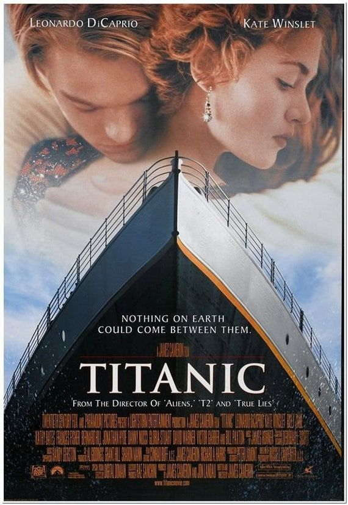

Titanic
- Calificación: 4.8 ★★★★
- Estreno: 19 de diciembre de 1997 en Tokio y llego a Argentina el 5 de febrero de 1998
- Duración: 3 horas 14 minutos
- Sinopsis: La película se centra en la historia de amor entre Jack y Rose, dos jóvenes de clases diferentes que se ven unidos por el destino durante el fatídico viaje. Sin embargo, también tiene un impacto mayor, ya que narra una historia sobre la resistencia humana frente a la tragedia.
- Género: Romance